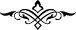

[173]. Kurtubî, el-Câmi‘ li-ahkâmi’l-Kur’ân, VII, 110
[174]. Müslim, Zekât, 95, 97; Ebû Dâvûd, Zekât, 39
[175]. İbn Mâce, Et‘ıme, 31; Müsned, II, 97
[176]. Deylemî, hadis no: 502
[177]. Sehâvî, Mekâsıd, s. 177
[178]. Müsned, V, 243, 244
[179]. Sehâvî, Mekâsıd, s. 227
[180]. Müsned, IV, 315
[181]. bk. Buhârî, Edâhî, 3, 10; Müslim, Hac, 119; Nesâî, Tahâret, 182; İbn Mâce,
Menâsik, 36